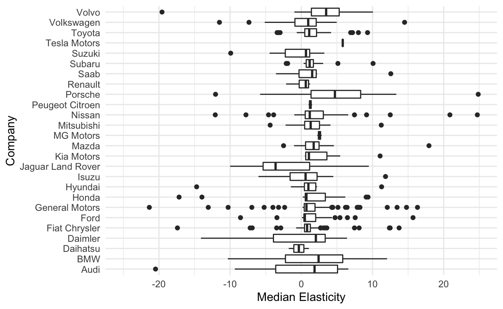
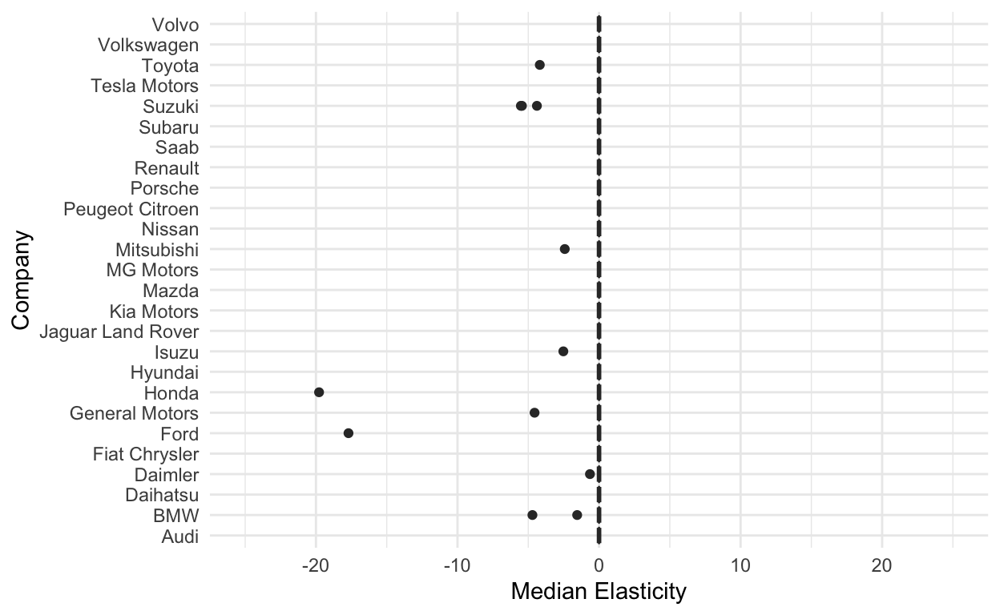
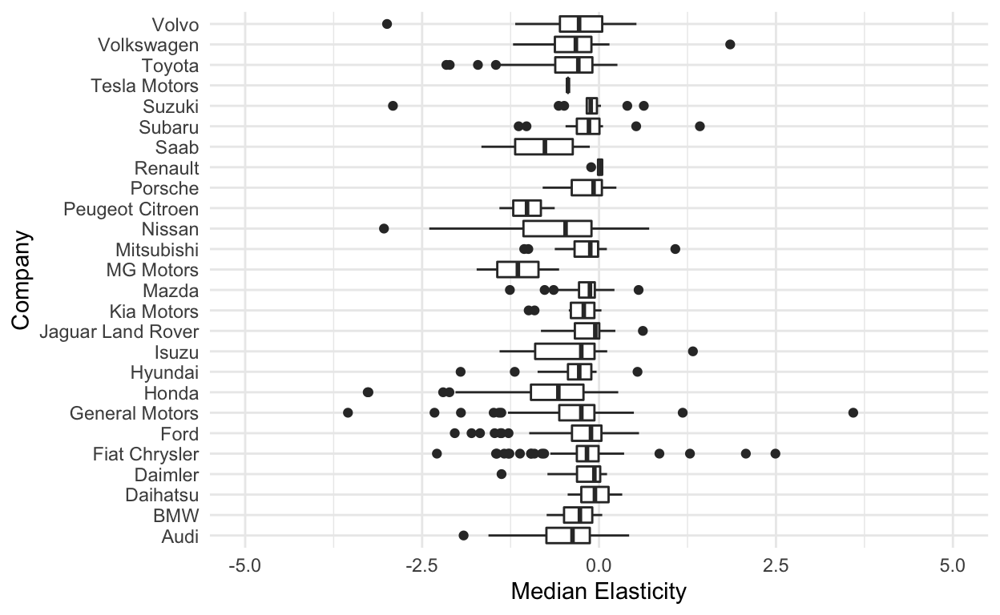
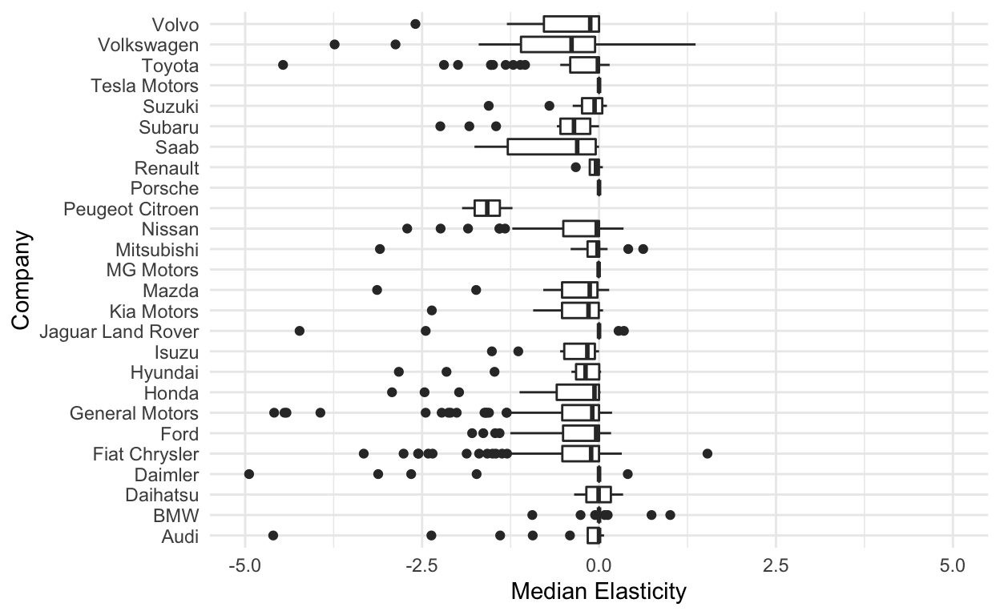
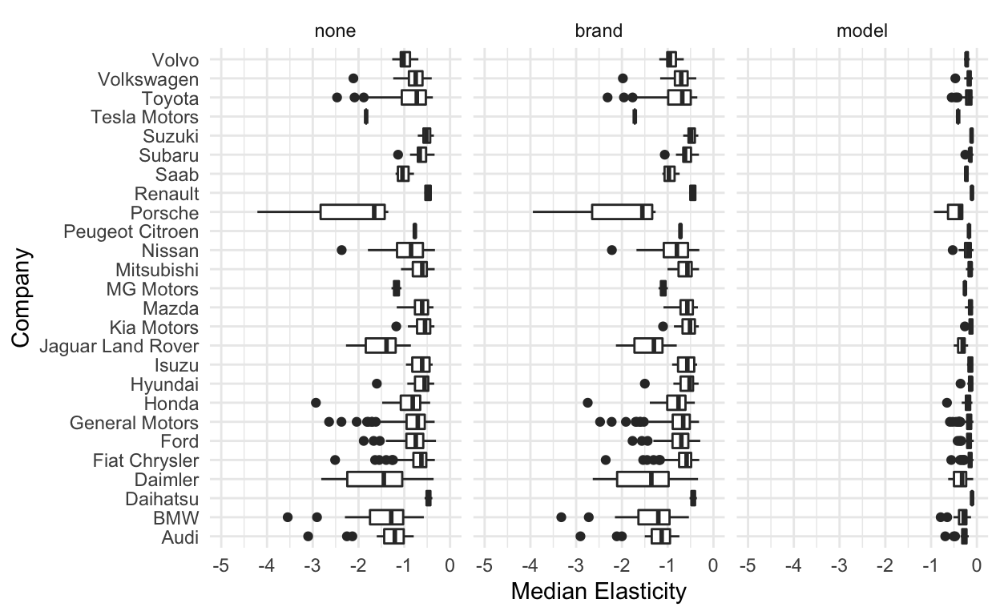

Introduction
In our last post, we analyzed the predictive accuracy of four algorithmic models of automobile demand: LASSO, CART, Random Forest, and XGBoost. What we found was mediocre predictive performance from LASSO, better performance from CART, and exceptional performance from Random Forest and XGBoost. Random Forest emerged as the clear victor in terms of predictive accuracy, with an \(R^2\) of above 0.9 and a very low RMSE to match.
But we immediately saw issues with interpretability, even with the relatively interpretable CART algorithm. What we want to address in this post is how we can try to analyze the output of these models in a more economic way: what do they tell us about own-price elasticities of demand for these automobiles, if anything? Does the exceptional predictive performance of Random Forest transfer over to producing “good” estimates for elasticities?
In addition, we will compare the results of these models from this economic perspective to those from more traditional structural models of demand. Specifically, we will estimate various logit and IV logit models of demand, and finish off by attempting an estimation of the RC logit model in the style of BLP. We’ll compare the own-price elasticities resulting from these models, and see which of the models has the most desirable properties.
Algorithmic Models
Algorithmic models don’t generally have analytical formulas for partial effects, which we would need in order to calculate the own-price elasticities of demand resulting from these models. Instead, we will approximate these effects numerically.
Each algorithmic model will give us a function \(s(p,X)\), where the \(p\) is the price, \(X\) is a vector of features or covariates, and the function \(s(\cdot)\) outputs a market share. Thus, letting \(j\) be the car model and \(t\) be the market, we can approximate the implied own-price elasticity of demand from an algorithmic model as follows: \[\begin{align*} \varepsilon_{jt} = \frac{\partial s(p_{jt},X_{jt})}{\partial p_{jt}} \frac{p_{jt}}{s(p_{jt},X_{jt})} \approx \frac{s(p_{jt}+500,X_{jt})-s(p_{jt}-500,X_{jt})}{1000}\frac{p_{jt}}{s(p_{jt},X_{jt})} \end{align*}\] You might ask, why are we using such a large step size to approximate the derivative? Well, the majority of the algorithmic models we’re using are tree-based, meaning that they approximate the function \(s(p,X)\) with a piecewise-constant function. Thus, if we make the step size too small, the derivative will always be exactly zero.
LASSO
We’ll start off as usual with LASSO. First, we need to load and process the data:
# Load data
df_raw <- haven::read_dta("Model_panel_cleaned.dta")
# Clean and process
df<- df_raw %>%
select(-starts_with("I_"),-count_trim,-Model_id,-MY_id,
-nationality1,-nationality2,
-korea,-mexico,-netherlands,-spain,-italy,-germany,
-france,-uk,-sweden,-japan,-indian,-china,-canada,
-starts_with("income_"),-gas_nominal,-gas_real,
-car_size,-car_volume,-hp_to_cyl,-hp_to_weight,
-transmission_id,-drivetype_id,-body_original,
-model_age,-engine_hp,-mpg_combined,-dpm_combined,
-curb_weight_lbs,-trim_name,-cpi,-log_mpg_combined) %>%
mutate(log_mpg_city=log(mpg_city)) %>%
mutate(log_mpg_hwy=log(mpg_hwy)) %>%
mutate(log_dpm_city=log(dpm_city)) %>%
mutate(log_dpm_hwy=log(dpm_hwy)) %>%
mutate(nationality=case_when(nationality%in%
c("Italy/US","Germany/US") ~ "US",
nationality == "" ~ "US",
TRUE ~ nationality)) %>%
select(-c(mpg_city,mpg_hwy,dpm_city,dpm_hwy)) %>%
mutate_if(is.character,as.factor) %>%
mutate(share=sales/(nb_hh*1000)) %>%
group_by(Year) %>%
mutate(own_mkt_price_ratio=price/((sum(price)-price)/(n()-1))) %>%
group_by(class) %>%
mutate(own_class_price_ratio=price/((sum(price)-price)/(n()-1))) %>%
ungroup %>%
select(-sales,-nb_hh) %>%
drop_na()
# Convert to data frame for better compatibility
df<- as.data.frame(df)
# Create dataframes with adjusted prices
df_minus<- df %>% mutate(price=price-500)
df_plus<- df %>% mutate(price=price+500)
# Original prices
prices<- df$price
Now we split into test and training sets, and created the cross-validation sets.
set.seed(123)
df_split <- initial_split(df, strata = share)
df_train <- training(df_split)
df_test <- testing(df_split)
df_folds <- vfold_cv(df_train, strata = share)
And, we create a recipe to be used in the models.
demand_recipe<- recipe(formula= share ~., data=df_train) %>%
update_role(Year, new_role="Market") %>%
step_other(company,threshold=0.05) %>%
step_other(brand,nationality,suv_class,threshold=0.02) %>%
step_other(model,threshold=0.0045) %>%
step_dummy(all_nominal())
Now, we fit the LASSO model to the training data.
glmnet_recipe <-
recipe(formula= share ~., data=df_train) %>%
update_role(Year, new_role="Market") %>%
step_other(company,threshold=0.05) %>%
step_other(brand,nationality,suv_class,threshold=0.02) %>%
step_other(model,threshold=0.0045) %>%
step_normalize(all_predictors(), -all_nominal()) %>%
step_dummy(all_nominal())
glmnet_prep<- prep(glmnet_recipe)
glmnet_bake_minus<- bake(glmnet_prep,new_data=df_minus)
glmnet_bake_plus<- bake(glmnet_prep,new_data=df_plus)
glmnet_bake<- bake(glmnet_prep,new_data=df)
glmnet_spec <-
linear_reg(penalty = 2.037462e-10, mixture = 1) %>%
set_mode("regression") %>%
set_engine("glmnet")
glmnet_workflow <-
workflow() %>%
add_recipe(glmnet_recipe) %>%
add_model(glmnet_spec) %>%
fit(df_train)
We’re not quite done. In order to calculate the elasticities, we run the fitted model on the original data, and on the data with altered prices. Then we calculate the approximation formula, and take medians for each model across markets.
glmnet_predictions_minus<- predict(glmnet_workflow$fit$fit,glmnet_bake_minus)
glmnet_predictions_plus<- predict(glmnet_workflow$fit$fit,glmnet_bake_plus)
glmnet_predictions<- predict(glmnet_workflow$fit$fit,glmnet_bake)
glmnet_elasticities<- data.frame(company=df$company,brand=df$brand,
model=df$model,Year=df$Year,
elasticity=((glmnet_predictions_plus[[1]]-
glmnet_predictions_minus[[1]])/1000)*
(prices/glmnet_predictions[[1]])) %>%
group_by(company, brand, model) %>%
summarize(elasticity=median(elasticity))
Let’s take a look at the results.
glmnet_elasticities %>% ggplot(aes(x=company,y=elasticity)) + geom_boxplot() +
xlab("Company") + ylab("Median Elasticity") + ylim(-25,25)+
scale_color_viridis(discrete=T,guide=F) + coord_flip() + theme_minimal()

These results are, to put it bluntly, pretty bad. Most of the own-price elasticities coming from LASSO are positive, which is not what we should expect from economic theory. In addition, there is quite a wide spread, in both the positive and negative directions - and we even excluded some of the larger values!
In short, the LASSO regression approach does not seem to produce very reasonable results for statistical inference in this problem. Reasons for this could be simultaneity issues or other endogeneity problems with the price coefficient.
CART
Let’s try this same type of analysis on CART. We’ll fit the CART model to the training data first (code echoing is suppressed because the procedure is mostly the same as before).
Then, we calculate the resulting elasticities. We plot them in the same way below:

This is in some ways even worse than LASSO, but shouldn’t be unexpected. CART will have the most piecewise-constant functional form out of all the models, and so even with a price shift of 1000 dollars, it isn’t enough to change the predicted share for most of the vehicles in the data. For those that have a non-zero elasticity, the elasticity is negative, which is better than what we saw from LASSO.
Random Forest
Now we repeat the same process for random forest: fit the model to the training data, and evaluate it on all the data and the price-shifted data, and calculate the resulting elasticities.
We plot the results below.

The results are quite impressive: almost all the elasticities fall within the -2 to 0 range. There are a few outlying positive estimates, but they are relatively uncommon. The only major issue with these results is that the implication is that most firms are pricing on the inelastic portion of the demand curve. We would expect instead that such firms would want to increase their prices and thus increase profits. So it may be the case the while the Random Forest elasticities are better than the others, they are biased towards zero; some sort of shrinkage is happening. It may be still due to the piecewise-constant functional form of regression tree models, or it could be more econometric issues with endogeneity.
XGBoost
Finally, we repeat the procedure on the XGBoost model.
Below, we plot the results.

XGBoost also produces much more reasonable estimates than LASSO and CART, and almost all of them are negative. However, XGBoost does seem to suffer from a shrinkage issue slightly more than Random Forest does. If we look at the data underlying the above plot, we do see indeed that many estimates are simply zero, corresponding to flat portions of the estimated demand function.
What’s important to note here is that the two models that perform the best predictively also seem to perform the best in terms of statistical inference. Perhaps the two are not altogether disconnected, but we will see in the next section how these impressively accurate algorithmic models compare with some data models in terms of statistical inference.
Structural Models of Demand
The Logit Model
For the logit model, we assume that consumers \(i\) choose among products \(j\) in market \(t\) to maximize the following utility function: \[\begin{align*} u_{ijt} = X_{jt} \beta + \alpha p_{jt} + \xi_{jt} + \epsilon_{ijt} \end{align*}\] where \(X_{jt}\) is a vector of product-specific covariates, \(\xi_{jt}\) captures unobserved heterogeneity at the product level, and \(\epsilon_{ijt}\) is an individual and product-specific shock. In the logit model, we assume that the \(\epsilon_{ijt}\) shocks are Type 1 extreme value so that we can use the convenient logit form of the conditional choice probabilities.
Now we will write \(\delta_{jt} = X_{jt} \beta + \alpha p_{jt} + \xi_{jt}\), the mean utility from product \(j\) in market \(t\). Note that the mean utility for the outside good, \(j=0\), is normalized to 0. Thus, the form for the utility function becomes \(u_{ijt} = \delta_{jt} + \epsilon_{ijt}\), and we can easily apply the logit choice probability formula to obtain: \[\begin{align*} s_{jt} = \frac{e^{\delta_{jt}}}{1+\sum_{k>0} e^{\delta_{kt}}} \end{align*}\] The outside good share is: \[\begin{align*} s_{0t} = \frac{1}{1+\sum_{k>0} e^{\delta_{kt}}} \end{align*}\] Taking logs: \[\begin{align*} \log s_{jt} &= \delta_{jt}- \log(1+\sum_{k>0} e^{\delta_{kt}}) \\ \log s_{0t} &= -\log(1+\sum_{k>0} e^{\delta_{kt}}) \end{align*}\] Thus, we can subtract the two equations and substitute in the functional form of \(\delta_{jt}\) to find: \[\begin{align*} \log s_{jt} - \log s_{0t} = X_{jt} \beta + \alpha p_{jt} + \xi_{jt} \end{align*}\] This last equation is something we can estimate quite easily using OLS.
Finally, we need to know what this model predicts for elasticities. It can be easily derived that the own-price elasticity of demand for product \(j\) in market \(t\) resulting from this model is as follows: \[\begin{align*} \varepsilon_{jt} = \frac{p_{jt}}{s_{jt}} (\alpha s_{jt}(1-s_{jt})) \end{align*}\]
Now for the estimation procedure. First, we clean the data slightly differently relative to the algorithmic models. We scale price by 1000 to put it into more friendly units, and add in the dummy variables for all categorical predictors.
df_struct<- df_raw %>%
select(-trim_name,-starts_with("log_"),
-model_age,-body_original,-transmission_id,-drivetype_id,
-starts_with("income_"), -cpi,-gas_nominal,-gas_real,
-korea,-mexico,-netherlands,-spain,-italy,-germany,
-france,-uk,-sweden,-japan,-indian,-china,-canada,
-nationality1,-nationality2,-MY_id,-Model_id,-count_trim,
-starts_with("I_"),-suv_class,-nb_bodystyle,-mpg_city,-mpg_hwy,
-dpm_city,-dpm_hwy
) %>%
mutate(nationality=case_when(nationality%in%
c("Italy/US","Germany/US") ~ "US",
nationality == "" ~ "US",
TRUE ~ nationality)) %>%
mutate_if(is.character,as.factor) %>%
mutate(share=sales/(nb_hh*1000)) %>%
select(-sales,-nb_hh) %>%
#get price into scale consistent with BLP
mutate(price = price/1000) %>%
drop_na() %>%
dummy_cols(select_columns=c("engine_fuel","nationality","drivetype",
"transmission","class")) %>%
select(-c(engine_fuel,engine_fuel_Gas,nationality,
nationality_US,drivetype,drivetype_FWD,
transmission,transmission_A,class, class_Sedan))
for (i in 1:ncol(df_struct)) {
attr(df_struct[[i]],"label")<- NULL
attr(df_struct[[i]],"format.stata")<- NULL
}
Then, we need to calculate the differences between the log shares and the log of the outside share.
Now we’re ready to estimate the model. We actually estimate three models: one with no product or brand dummies, a second with brand dummies, and a third with model dummies. This will give us an idea of how unobserved heterogeneity at the brand and model levels affects the estimates of price and other coefficients.
logit_model_ols<- lm(log_share~price+engine_nbcylinder +
wheelbase_ins+size_length_ins+
size_width_ins+size_height_ins+
curb_weight_lbs+mpg_combined+
engine_hp+engine_hp_rpm+
nb_doors+hp_to_weight+
hp_to_cyl+car_size+car_volume+
dpm_combined+engine_fuel_Diesel+
engine_fuel_Elec+nationality_China+
nationality_France+nationality_Germany+
nationality_Indian+nationality_Japan+
nationality_Korea+nationality_Netherlands+
nationality_Sweden+nationality_UK+
drivetype_AWD+drivetype_RWD+
transmission_M+`class_Cargo Van` +
class_Coupe+class_Hatchback+class_Minivan+
class_Pickup+class_Suv+class_Wagon,data=df_struct)
logit_model_ols_brand<- lm(log_share~price+brand+engine_nbcylinder +
wheelbase_ins+size_length_ins+
size_width_ins+size_height_ins+
curb_weight_lbs+mpg_combined+
engine_hp+engine_hp_rpm+
nb_doors+hp_to_weight+
hp_to_cyl+car_size+car_volume+
dpm_combined+engine_fuel_Diesel+
engine_fuel_Elec+nationality_China+
nationality_France+nationality_Germany+
nationality_Indian+nationality_Japan+
nationality_Korea+nationality_Netherlands+
nationality_Sweden+nationality_UK+
drivetype_AWD+drivetype_RWD+
transmission_M+`class_Cargo Van` +
class_Coupe+class_Hatchback+class_Minivan+
class_Pickup+class_Suv+class_Wagon,data=df_struct)
logit_model_ols_product<- lm(log_share~price+model+engine_nbcylinder +
wheelbase_ins+size_length_ins+
size_width_ins+size_height_ins+
curb_weight_lbs+mpg_combined+
engine_hp+engine_hp_rpm+
nb_doors+hp_to_weight+
hp_to_cyl+car_size+car_volume+
dpm_combined+engine_fuel_Diesel+
engine_fuel_Elec+nationality_China+
nationality_France+nationality_Germany+
nationality_Indian+nationality_Japan+
nationality_Korea+nationality_Netherlands+
nationality_Sweden+nationality_UK+
drivetype_AWD+drivetype_RWD+
transmission_M+`class_Cargo Van` +
class_Coupe+class_Hatchback+class_Minivan+
class_Pickup+class_Suv+class_Wagon,data=df_struct)
| Dependent variable: | |||
| Market Share | |||
| No Dummies | Brand Dummmies | Model Dummies | |
| (1) | (2) | (3) | |
| price | -0.061*** | -0.057*** | -0.014*** |
| (0.003) | (0.003) | (0.004) | |
| mpg_combined | -0.008*** | -0.017*** | 0.006*** |
| (0.003) | (0.002) | (0.002) | |
| engine_hp | 0.006*** | 0.005*** | 0.004*** |
| (0.001) | (0.001) | (0.001) | |
| hp_to_weight | -21.407*** | -20.351*** | -21.517*** |
| (4.949) | (4.561) | (4.598) | |
| car_size | -0.224*** | -0.064 | 0.031 |
| (0.065) | (0.061) | (0.068) | |
| dpm_combined | -15.308*** | -16.264*** | -4.960*** |
| (1.261) | (1.118) | (0.778) | |
| Constant | -18.072*** | -15.709*** | -10.599*** |
| (2.479) | (2.338) | (2.583) | |
| Observations | 6,875 | 6,875 | 6,875 |
| R2 | 0.502 | 0.632 | 0.884 |
| Adjusted R2 | 0.499 | 0.627 | 0.871 |
| Residual Std. Error | 1.026 (df = 6837) | 0.885 (df = 6790) | 0.521 (df = 6170) |
| Note: | p<0.1; p<0.05; p<0.01 | ||
The results are provided in the table above, for a few select variables.
Interestingly, the addition of the model and brand dummies actually decreases the price coefficient (in absolute value), though it remains negative. Generally, we would expect that once unobserved heterogeneity at the model or brand level is accounted for, consumers would become more sensitive to price; however, this appears to not be the case here.
What are the resulting elasticities? We calculate and plot them below.
# Elasticities, no dummies
ols_elasticities<- data.frame(company=df_struct$company,brand=df_struct$brand,
model=df_struct$model,Year=df_struct$Year,
elasticity=(df_struct$price/(exp(predict.lm(logit_model_ols,df_struct)+
log(df_struct$outside_share))))*
(logit_model_ols$coefficients["price"]*
(exp(predict.lm(logit_model_ols,df_struct)+
log(df_struct$outside_share)))*
(1-(exp(predict.lm(logit_model_ols,df_struct)+
log(df_struct$outside_share)))))) %>%
group_by(company, brand, model) %>%
summarize(elasticity=median(elasticity)) %>%
mutate(dummies="none")
# Elasticities, brand dummies
ols_elasticities_brand<- data.frame(company=df_struct$company,brand=df_struct$brand,
model=df_struct$model,Year=df_struct$Year,
elasticity=(df_struct$price/(exp(predict.lm(logit_model_ols_brand,df_struct)+
log(df_struct$outside_share))))*
(logit_model_ols_brand$coefficients["price"]*
(exp(predict.lm(logit_model_ols_brand,df_struct)+
log(df_struct$outside_share)))*
(1-(exp(predict.lm(logit_model_ols_brand,df_struct)+
log(df_struct$outside_share)))))) %>%
group_by(company, brand, model) %>%
summarize(elasticity=median(elasticity)) %>%
mutate(dummies="brand")
# Elasticities, model dummies
ols_elasticities_model<- data.frame(company=df_struct$company,brand=df_struct$brand,
model=df_struct$model,Year=df_struct$Year,
elasticity=(df_struct$price/(exp(predict.lm(logit_model_ols_product,df_struct)+
log(df_struct$outside_share))))*
(logit_model_ols_product$coefficients["price"]*
(exp(predict.lm(logit_model_ols_product,df_struct)+
log(df_struct$outside_share)))*
(1-(exp(predict.lm(logit_model_ols_product,df_struct)+
log(df_struct$outside_share)))))) %>%
group_by(company, brand, model) %>%
summarize(elasticity=median(elasticity)) %>%
mutate(dummies="model")
# Combining
ols_elasticities_all<- rbind(ols_elasticities,
ols_elasticities_brand,
ols_elasticities_model)
ols_elasticities_all$dummies<- factor(ols_elasticities_all$dummies, levels=c("none","brand","model"))
# Plotting
ols_elasticities_all %>% ggplot(aes(x=company,y=elasticity)) +
geom_boxplot() + xlab("Company") + ylab("Median Elasticity") +
ylim(-5,0)+ scale_color_viridis(discrete=T,guide=F) +
coord_flip() + theme_minimal() + facet_wrap(~dummies)

As we might expect, the elasticities for the estimates with model dummies are smallest, and those without dummies are the largest (in absolute value). This is no coincidence, since the elasticities are determined by the \(\alpha\) price coefficient. However, while they are negative by construction, many of them still fall between -1 and 0, implying that the firms are pricing on the inelastic portion of the demand curve. We see elasticities that are not all that different from those from the algorithmic models, with the notable exception of some of the smaller companies like Porsche and Daimler. These may be accounted for by the high prices of these vehicles in the sample, which feed into the elasticity formula.
The IV Logit Model
When estimating the logit model by OLS, we may be concerned with endogeneity of the price coefficient due to correlation between prices and unobserved model heterogeneity. In order to circumvent this, the linear regression formulation of the logit model allows for an intuitive use of instrumental variables estimation. For instruments, we use sums of product characteristics for products in the same company and products in the same market: the so-called “BLP instruments.” In addition, we have one more instrument up our sleeve: the exchange rate of the country in which the car’s manufacturer is located. This may be correlated with certain cost-side factors, but is unlikely to be correlated with the market share.
First, we calculate the BLP instruments:
blp_instruments <-
c("mpg_combined","engine_hp","hp_to_weight","car_size","dpm_combined")
df_struct<- df_struct %>%
group_by(Year,company) %>%
mutate(across(all_of(blp_instruments), ~sum(.x)-.x,.names="BLP2_{.col}")) %>%
ungroup %>%
group_by(Year) %>%
mutate(BLP3_car_size = sum(car_size) - car_size - BLP2_car_size,
BLP3_mpg_combined = sum(mpg_combined) - mpg_combined - BLP2_mpg_combined,
BLP3_dpm_combined = sum(dpm_combined) - dpm_combined - BLP2_dpm_combined,
BLP3_engine_hp = sum(engine_hp) - engine_hp - BLP2_engine_hp,
BLP3_hp_to_weight = sum(hp_to_weight) - hp_to_weight - BLP2_hp_to_weight
) %>%
ungroup
Next, we estimate the models using the same dummies formulation as before.
| Dependent variable: | |||
| Market Share | |||
| No Dummies | Brand Dummmies | Model Dummies | |
| (1) | (2) | (3) | |
| price | -0.054*** | -0.030*** | -0.031* |
| (0.009) | (0.009) | (0.018) | |
| mpg_combined | -0.008*** | -0.014*** | 0.005** |
| (0.003) | (0.003) | (0.002) | |
| engine_hp | 0.006*** | 0.004*** | 0.004*** |
| (0.001) | (0.001) | (0.001) | |
| hp_to_weight | -21.892*** | -21.031*** | -21.168*** |
| (4.978) | (4.596) | (4.620) | |
| car_size | -0.221*** | -0.057 | 0.010 |
| (0.065) | (0.062) | (0.072) | |
| dpm_combined | -14.718*** | -14.219*** | -5.889*** |
| (1.409) | (1.288) | (1.251) | |
| Constant | -18.321*** | -16.470*** | -10.426*** |
| (2.494) | (2.365) | (2.594) | |
| Observations | 6,875 | 6,875 | 6,875 |
| R2 | 0.501 | 0.627 | 0.884 |
| Adjusted R2 | 0.499 | 0.622 | 0.870 |
| Residual Std. Error | 1.026 (df = 6837) | 0.891 (df = 6790) | 0.522 (df = 6170) |
| Note: | p<0.1; p<0.05; p<0.01 | ||
Results are tabulated above.
The instruments don’t actually do much for us in terms of altering the price coefficient, except in the model dummies formulation. Thus, we shouldn’t expect the elasticities to be radically different:
The instrumental variables regression doesn’t greatly change the elasticities, and simply homogenizes them slightly across the different models. Another reason the IV logit model isn’t sufficient to estimate demand is that it doesn’t account for the varying substitution patterns between the products. We won’t focus on that in this post, but this problem mainly has to do with the cross-price elasticities.
The Random Coefficients Logit Model
The random coefficients model builds on the Logit model by allowing some of the coefficients, including the price coefficient \(\alpha\), to vary across individuals. However, since we don’t observe data at the individual level, we assume a parametric distribution for the coefficients and estimate the parameters of this distribution. Estimation of this model is quite a bit more complicated. For simplicity, in this post, we will ignore the observed demographic distribution we have, and estimate with only unobserved heterogeneity at the individual level. We will allow four coefficients to vary among individuals: the intercept, the price coefficient, miles per gallon, and horsepower to weight ratio. We will use the same instruments as in the previous portion.
In order to do the estimation, we use the BLPestimatoR package, which implements the calculation of the objective function in C++ for speed. Normally, calculating this function is very slow, as it requires repeated use of a contraction mapping that needs to converge to a very high degree of accuracy. Thus, implementing this portion of the estimation process in C++ allows estimation to take place in a reasonable amount of time.
First, we create the model:
# formula is as follows: linear | exogenous | random coefficients | IVs
blp_model <- as.formula([2410 chars quoted with '"'])
rc <- c("(Intercept)","price","mpg_combined","hp_to_weight")
blp_instruments <-
c("car_size", "mpg_combined", "dpm_combined", "engine_hp", "hp_to_weight")
Then, we provide the necessary information to estimate, and run the estimation:
blp_basic_data <- BLP_data(
model = blp_model,
market_identifier = "Year",
product_identifier = "Model_id",
productData = df_struct,
blp_inner_tol = 1e-9, blp_inner_maxit = 5000,
integration_method = "MLHS",
integration_accuracy = 40,
integration_seed = 1
)
Mean utility (variable name: `delta`) is initialized with 0 because of missing or invalid par_delta argument.blp_basic_est <- estimateBLP(
blp_data = blp_basic_data,
solver_method = "BFGS", solver_maxit = 1000, solver_reltol = 1e-9,
standardError = "heteroskedastic",
extremumCheck = FALSE,
printLevel = 0
)
blp_data were prepared with the following arguments:
BLP_data(model = blp_model, market_identifier = "Year", product_identifier = "Model_id",
productData = df_struct, integration_accuracy = 40, integration_method = "MLHS",
integration_seed = 1, blp_inner_tol = 1e-09, blp_inner_maxit = 5000)
------------------------------------------
Solver message: Successful convergence
------------------------------------------
Final GMM evaluation at optimal parameters:
gmm objective: 110.3596
theta (RC): -0.32 -0.06 -0.05 56.41
theta (demogr.):
inner iterations: 42
gradient: 0.0386 -0.145 -0.3041 1e-04
Using the heteroskedastic asymptotic variance-covariance matrix... Results are tabulated below:
| Dependent variable: | |||
| Market Share | |||
| Mean Effect | Std. Dev. | ||
| price | -0.188*** | 0.061** | |
| (0.053) | (0.024) | ||
| mpg_combined | -0.085** | 0.05** | |
| (0.039) | (0.02) | ||
| engine_hp | 0.012*** | ||
| (0.003) | |||
| hp_to_weight | -115.9*** | 56.41*** | |
| (31.27) | (16.5) | ||
| car_size | -0.285*** | ||
| (0.083) | |||
| dpm_combined | -33.26*** | ||
| (5.717) | |||
| Constant | -14.85*** | 0.324 | |
| (3.303) | (0.44) | ||
| Observations | 6,875 | ||
| Note: | p<0.1; p<0.05; p<0.01 | ||
Here we finally see a meaningful increase in the size of the price coefficient relative to the original OLS estimates, along with a statistically significant (though not very large) degree of individual heterogeneity in price sensitivity. Let’s have a look at the resulting elasticities:
# Plotting
elasticity_data %>% ggplot(aes(x=company,y=elasticity)) +
geom_boxplot() + xlab("Company") + ylab("Median Elasticity") +
ylim(-5,0)+ scale_color_viridis(discrete=T,guide=F) +
coord_flip() + theme_minimal()

Now we see more reasonable results: almost all elasticities greater than 1 in absolute value, and all are negative. This is the result of the desirable features of the random coefficients logit model: accounting for unobserved individual taste heterogeneity, and allowing for more sophisticated substitution patterns between products.
What do we learn from this plot? Well, we notice that luxury brands like Jaguar Land Rover and Porsche seem to have higher elasticities, whereas mainstream brands like Ford and General Motors tend to have lower elasticities for their vehicles. Practically, this makes a fair bit of sense: companies like Porsche tend to have vehicles with very high prices and very low market shares, and thus slight changes in market share look comparatively large relative to slight changes in price.
Conclusion
While algorithmic models like Random Forest and XGBoost deliver fantastic results for prediction, they do still fall short when attempting to perform statistical inference with them. We see significant shrinkage of own-price elasticities of demand in our example from both Random Forest and XGBoost, with XGBoost suffering slighlty more from this problem. In addition, the elasticities have a significant spread, some spilling over onto the positive side of the axis.
On the other hand, the logit model of demand delivers elasticity estimates that are more reliably negative, but not significantly better than those from the Random Forest. Adding in instrumental variables to the estimation doesn’t help much. To solve this problem, we use the random coefficients logit model of demand. It delivers very reasonable estimates for own-price elasticities that accord with economic theory. They are all negative, and generally are greater than 1 in absolute value. Vehicles with high prices and low market shares tend to have higher elasticities, while those in the opposite camp tend to have lower elasticities.
Our future posts will hopefully explore the reasons for these differences, and see if there are any ways to overcome the shrinkage problem that the algorithmic models seem to suffer from. We will also see if there is a way to estimate a matrix of cross-price elasticities using the algorithmic models, and how the substitution patterns compare to the benchmark random coefficients logit model. Finally, we will compare the predictive performance of the logit models to that of the algorithmic models.